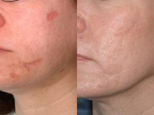

MLADEŽI
Raniji stav da je uklanjanje mladeža opasno po zdravlje je u potpunosti netačan i poticao je iz neznanja.
U zavisnosti od tipa mladeža oni se mogu otklanjati klasičnom hirurškom ekscizijom ili tehnikom radiotalasa. Tehnika uklanjanja mladeža radiotalasima je hirurška tehnika kod koje se ekscizija vrši elektrodom umesto skalpelom.
Patohistološki pregled mladeža je obavezan, bez obzira kojom metodom se mladež uklanja i da li se uklanja iz esteskih ili zdravstvenih razloga.
Dubina i širina ekscizije bez obzira kojom tehnikom se radi zavisi prvenstveno od tipa mladeža, lokalizacije i da li se uklanja iz estetskih razloga ili se na mladežu uočavaju neke rizične promene u strukturi, boji i obliku.
PREDNOSTI UKLANJANJA MLADEŽA RADIOTALASIMA
Najveća prednost radiotalasa je minimalna trauma tkiva, pa samim tim i lakše i bolje zarastanje rana bez ožiljaka ili sa jedva primetnim ožiljcima.
Radiotalasna metoda je bezbedna, beskrvna i bezbolna (koristi se lokalni anestetik u obliku kreme) i toliko elegantna da pacijenti nemaju osećaj da se podvrgavaju hirurškoj intervenciji što je od presudnog značaja za smanjenje stresa i osećaj komfora pacijenta i pri tom daje izvanredan estetski rezultat.
Ožiljci
Ožiljci su rezultat zarastanja rana na koži nastalih povredom, hirurškom intervencijom, ili nekim kožnim oboljenjem (npr. akne ili boginje). Nastanak ožiljaka je prirodan proces kojim se normalna struktura kože zamenjuje tkivom ožiljka koje je drugačijeg sastava.
Postoje brojne tehnike kojima se ožiljci mogu smanjiti. Ožiljci nastali na mestu trauma i hirurških intervencija mogu se smanjiti abrazijom površine ožiljka radiotalasima kojom se ožiljak izravnava. Ukoliko je u pitanju veliki i hipertrofični ožiljak, najpre se obavi hirurška intervencija uz dalji lokalni tretman posle intervencije.
Treba imati na umu, da se izgled ožiljaka može poboljšati, da se ožiljak može i smanjiti, ali da se ne može potpuno ukloniti, odnosno, da se tkivo ožiljka ne može izlečiti tako da ima izgled i strukturu zdrave kože. Zato je za uspešno lečenje ožiljaka neophodan dogovor između lekara i pacijenta o tome šta pacijent može da očekuje i šta mu najviše smeta u vezi ožiljka i u odnosu na to da se odredi najbolji način lečenja.
FIBROMI
Fibromi su benigni izraštaji od vezivnog tkiva, dosta česti, sa sporim rastom. Javljaju se kao pojedinačni ili multipni izraštaji na koži.
Najčešće se javljaju u predelu glave na koži kapaka, vrata, na trupu i pregibnim regijama – pazuhu i preponama. Okruglog su ili ovalnog oblika, jasno ograničeni od okoline.
Uklanjanjem fibroma se sprečava njihovo dalje širenje po koži jer je u nekim slučajevima dokazano prisustvo virusa.
Takođe je veoma bitan i estetski aspekt lečenja jer koža sa papilomima izgleda grubo i neuredno, a njihovim odstranjivanjem se ponovo dobija zdrava lepa koža bez ovih neprijatnih izraslina.
Metode lečenja su odstranjivanje laserom ili radiotalasna metoda. Na osnovu obimnih studija rađenih i u svetu i kod nas radiotalasna metoda je pokazala daleko najveću efikasnost.
Osim efikasnosti radiotalasna metoda daje i najbolji estetski rezultat jer se fibromi otklanjaju u potpunosti samo jednom intervencijom u trajanju od nekoliko sekundi, bezbolno, bez krvarenja i bez ožiljaka.
KONDILOMI
Kondilomi su bradavičasti izraštaji na koži anogenitalne regije izazvane humanim papiloma virusima.
Kondilomi, poznati kao polne bradavice, najčešće se javljaju u predelu polnih organa i anusa.
Uklanjanjem kondiloma se sprečava njihovo dalje širenje po koži obolelog i sprečava se širenje na druge osobe polnim kontaktom.
Metode lečenja su tečni azot, elektrokauterizacija, odstranjivanje laserom ili radiotalasna metoda. Na osnovu obimnih studija rađenih i u svetu i kod nas radiotalasna metoda je pokazala daleko najveću. Osim efikasnosti radiotalasna metoda daje i najbolji estetski rezultat jer se kondilomi otklanjaju u potpunosti samo jednom intervencijom u trajanju od nekoliko sekundi, bezbolno, bez krvarenja i bez ožiljaka. Za samo par minuta moguće je odstaniti 20-30 promena. I sami pacijenti su najzadovoljniji primenom radiotalasa. Uklanjanje je jednostavno i bezbolno uz korišćenje anestezije u obliku kreme.
BRADAVICE
 Bradavice su benigne promene na koži izazvane virusima i sve su kontagiozne – zarazne, mogu se preneti drugim osobama i autoinokulabilne što znači da se u koži pacijenta rasejavaju, šire i povećava im se broj.
Bradavice su benigne promene na koži izazvane virusima i sve su kontagiozne – zarazne, mogu se preneti drugim osobama i autoinokulabilne što znači da se u koži pacijenta rasejavaju, šire i povećava im se broj.
S obzirom na relativno brzo širenje bradavica po koži neophodno je njihovo što hitnije lečenje – uklanjanje radiotalasima u jednom aktu da bi se eliminisala mogućnost daljeg rasejavanja.
Za trajno uklanjanje bradavica idealno sredstvo su radiotalasi. Brojnim kliničkim studijama je dokazano da radiotalasi daju značajno bolje rezultate od drugih metoda (tečni azot, keratolitici ili termokauter) jer su recidivi izuzetno retki. Skidanje bradavica radiotalasima je bezbolno (koristi se anestezija u obliku kreme) i potreban je samo jedan tretman.